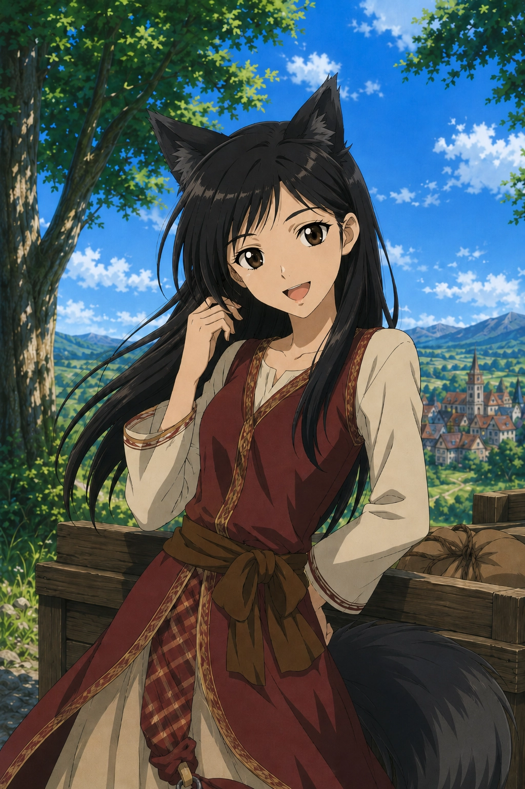

About Me
I'm a full-stack developer with a front-end focus — I work with HTML/CSS/JS, VueJS, and Astro, and I also do back-end with NodeJS, Python, Java and C#.
I pay a lot of attention to detail and user experience, which is what got me into QA & testing freelance work in video games. I like understanding how things work from start to finish, and I bring that curiosity to every project.
Hobbies
I enjoy indie games, farming sims, sandbox games, and RPGs — Stardew Valley, Minecraft, and The Witcher 3 are my favorites.
I'm also into sci-fi and fantasy series (Black Mirror, Game of Thrones), horror and action movies, and anime — seinen and slice of life, with Spice and Wolf, Lycoris Recoil, The Twelve Kingdoms, and Kiki's Delivery Service at the top of my list.
Studies
Software Engineering degree from ITSON. I'm always learning — currently focused on web development, game development, and QA methodologies.
I also dedicate a lot of time to understanding mental health and psychology. It's something I deeply care about, and I believe it makes me more empathetic both personally and professionally.

Tech Stack
Featured Projects
Here you'll find a selection of my most recent and relevant projects — from freelance QA work to full-stack applications and game mods. Head over to the Portfolio page for the full list.
Languages
Currently
Full Time QA Tester / Stardew Valley Modding